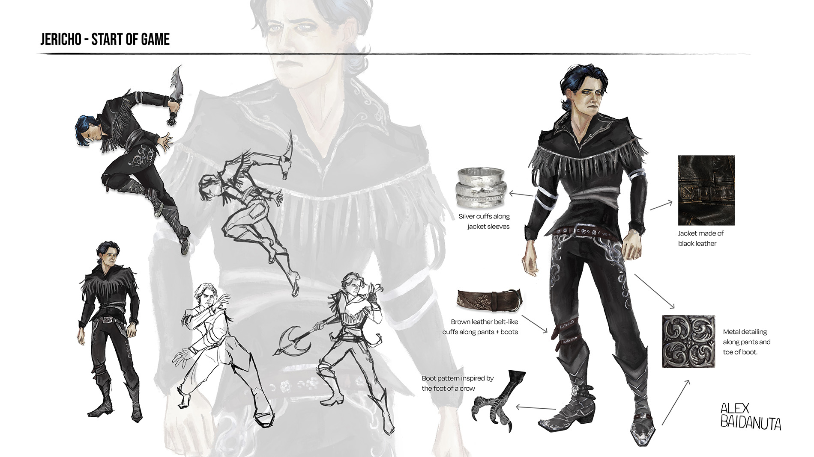
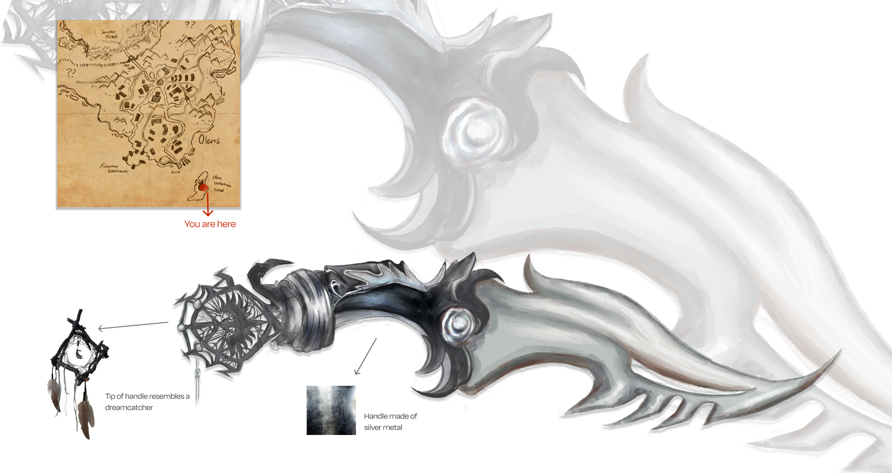
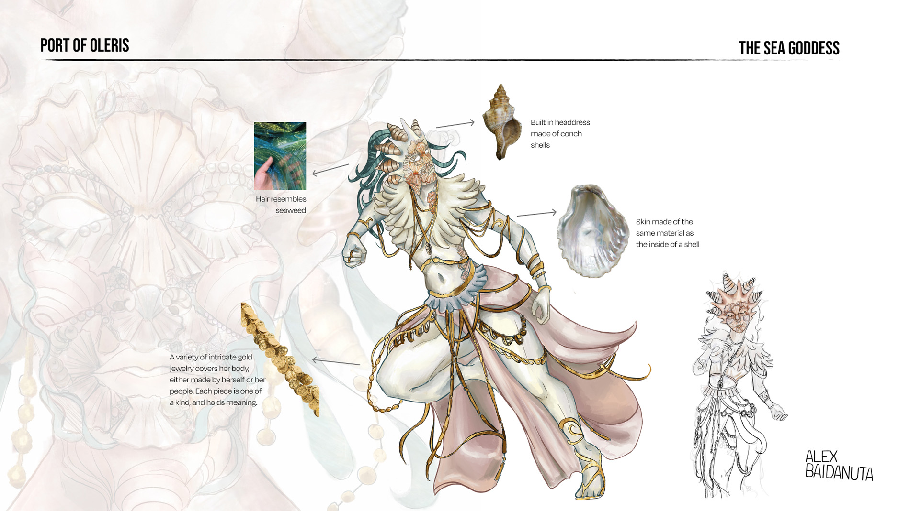
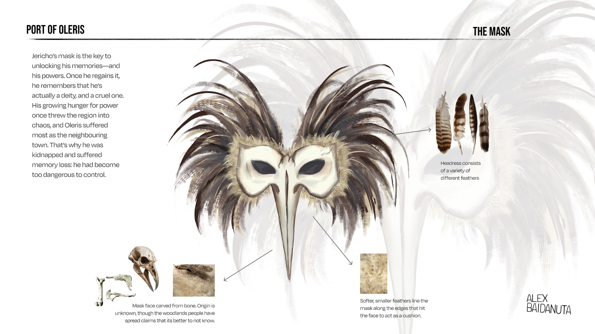
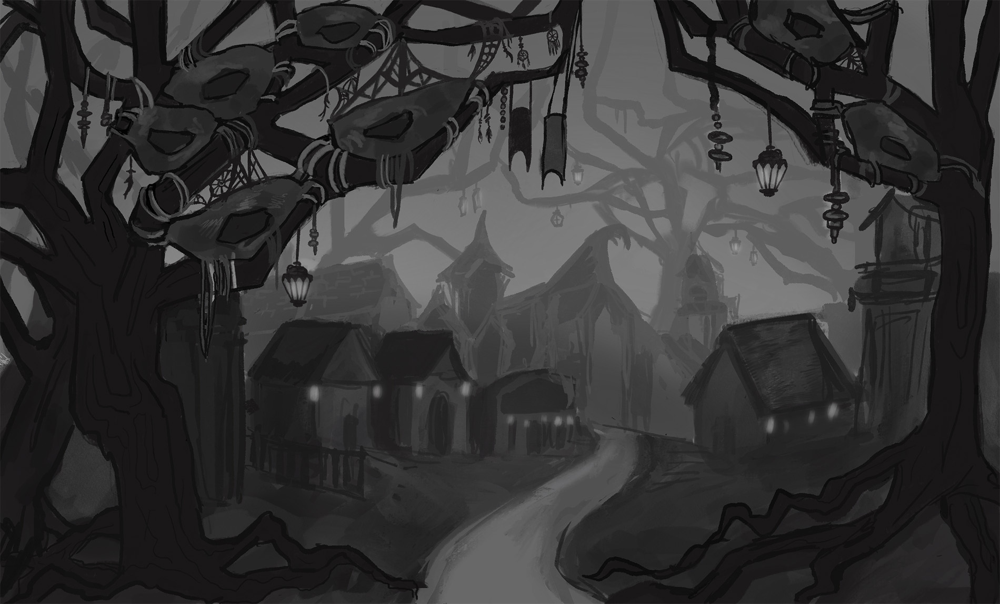
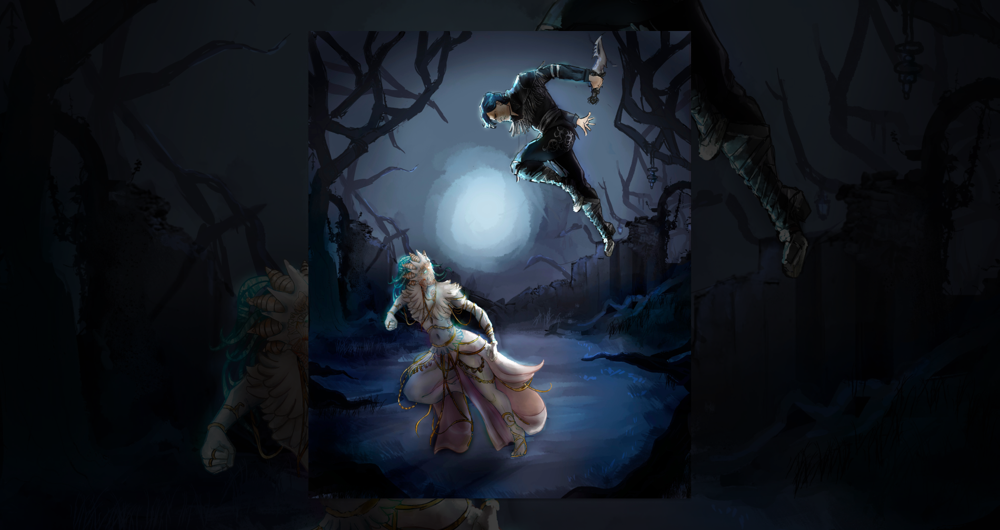
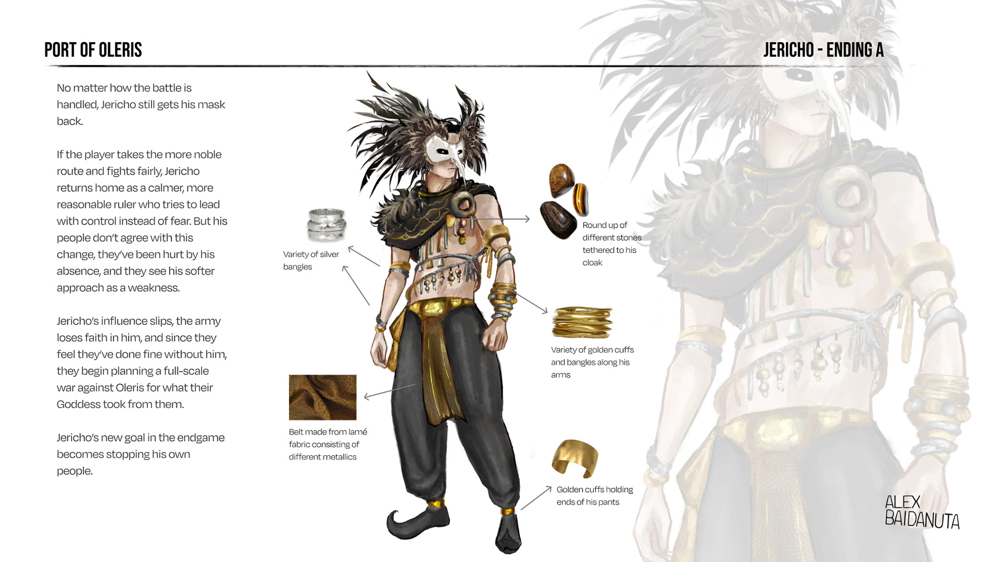
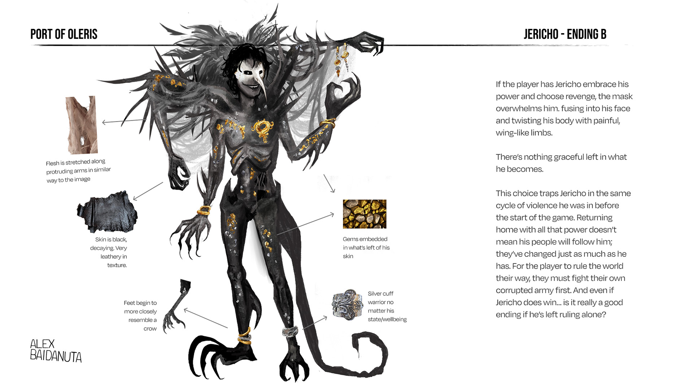

Jericho
Start of Game.
Jericho is the main character of the game. He wakes up disoriented, at a loss of where he is or who he is, creating a blank slate for players to start molding and discovering his person. His initial state is very lean, taller than average. Someone rather close to being underweight. His design was inspired by both western themes and a crow, showing in both his mannerisms and costume.

Weaponry and Items
Start of Game.
With Jericho being weak, exhausted, and stripped of everything he once had, players begin to explore, and scavenge for supplies on their way out. Every item you collect quietly shapes Jericho’s abilities, personality, and story path. Early on, you find two important objects: a hand-drawn map and a customizable dagger. Seeing his name on the map (Jericho’s Forest) triggers his first flashback, setting him on the journey to uncover who he is and why he was brought to the island.


The Sea Goddess
The worshipped Goddess of Oleris.
Though Oleris’ Goddess is known for her kindness and gentleness, she is very protective of her home and people. That is the reason why she was heavily involved in Jericho’s kidnap and torture. Like the sea, her power is calm until something disturbs it. Then it becomes overwhelming, crushing, or suffocating.

Jericho's Mask
The Key
Jericho’s mask is the final piece he needs to recover his memories and remember his true identity and past. With it, he's able to get back his powers, and recall that he is actually a deity—one who had grown cruel and reckless. That is the reason behind why he was kidnapped and taken to that dungeon. Before his capture, his power hunger pushed him into spiralling destruction, and Oleris suffered the most as the neighboring town caught in the fallout. His kidnapping and isolation on the island were a desperate attempt to contain him and stop the chaos he was causing.

Woodlands that are home to Jericho and his people. I imagined them to be warriors and weavers, people that are very resourceful with what they have in a way that shows through their daily lives. Some live in nests, while other live in more cottage-like homes. The people are rarely ever kind to strangers, much like their God.

The Confrontation
A battle between two Gods
This leads into the mid-boss fight. You find out the sea goddess has been hiding your mask, trying to stop you from ever regaining your powers. She did it to protect her people. How you handle this fight becomes the biggest indicator of who your character will become. Do you kill her out of anger, furious that she took what was yours and that her people misled you to keep you weak? Or do you understand why they feared you and try to end the fight without killing her, even if it means staying weaker and being judged by your own people for sparing her? If you let her live, you risk her doing the same thing again and putting your people in danger. Are you willing to take that chance?

Jericho
Ending A
Regardless of how you treat the fight, you do get your mask back. if you choose the route of handling it more nobly, you return back home and become a ruler thats more peaceful and reasonable. you practice control, and the ways of your land change. however, your people do not agree with this, as they were just as traumatized and hurt as you, and they will look down on you for this, which ultimately diminishes your power and influence over the people. The army feels as though you’re no longer a fit leader, and as they decided they were actually doing just fine without you, they go against you with a developing plan to fully go to war against Oleris. Your goal leading to the end of the game now is to stop your own people.

Jericho
Ending B
If you fully lean into your power and the revenge path, the mask’s energy quickly spirals out of control. It fuses into Jericho’s face, and twisted arms tear out from his back like raw, fleshy wings. It’s painful, violent—there’s no beauty or grace left in what he becomes. His body is so withered there's barely any flesh left, which is why when you start the game Jericho's character is underweight. this was his state before the abduction and loss of his powers. Choosing this path traps you in the same endless cycle of bloodshed and war you were trying to escape. Going home with all that power doesn’t mean your people will welcome you back. You’ve been gone too long, and they’ve lost their sense of value and restraint just as much as you have. So why would they obey you now? If you want to rule the world the way you think you deserve, you’ll have to fight your own corrupted army first. And even if you win… is it really a “good” ending if you end up ruling alone?